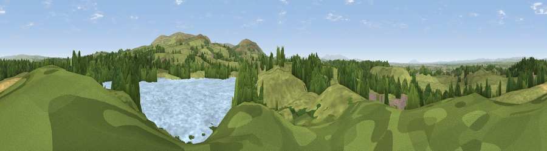

Viewpoint near Farlam
#9504 in England · top 32% of its area beats it · near FarlamWhere it is
The exact computed spot (NY 54238 58925). Click the marker for map links.
The view, rendered

A 360° render of this exact spot computed from the terrain model, tree cover and land cover — summer colours, afternoon light, calibrated against photographs of famous viewpoints. Real trees, hedges and buildings will differ in detail.
The panorama
Grey silhouette: terrain skyline in each direction (720 bearings, Earth curvature and refraction included). Dashed green: skyline with trees (+15 m) and buildings (+8 m) as obstacles. Blue strip: how far the ground is visible on each bearing.
Where the view opens
Wedge length = distance to the farthest visible ground on that bearing (vegetation-aware). Rings at 10, 25 and 50 km.
What fills the view
59% grassland · 17% water · 17% woodland · 6% cropland ·
Angular shares of the visible panorama (visual magnitude), not map area. Landscape diversity 0.48 (0–1 Shannon).
Key numbers
More beautiful places nearby
The staircase of upgrades: each row has a higher view potential than everything closer. Driving times are estimates from straight-line distance, calibrated against real road routing — check an actual route before setting out.
| Place | Direction | Drive | Score |
|---|---|---|---|
| Viewpoint near Castle Carrock | SSE · 2 km | ~6 min | 65.5 |
| Viewpoint near Brampton | NNW · 3 km | ~6 min | 67.3 |
| Whinny Fell | ESE · 3 km | ~7 min | 74.2 |
| Viewpoint near Farlam | SE · 4 km | ~9 min | 76.5 |
| Viewpoint near Castle Carrock | SE · 6 km | ~13 min | 76.9 |
| Viewpoint near Cumrew | SSE · 7 km | ~15 min | 78.8 |
| Barrock Fell | SSW · 14 km | ~25 min | 81.1 |
| Blencathra | SW · 38 km | ~57 min | 81.7 |
54.92291, -2.71554 · source: screening · position refined by local search. Computed location — check access rights before visiting.